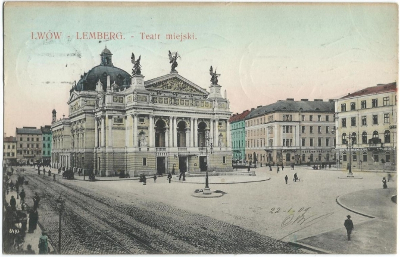

Початком мистецтва світу є театр.
Лесь Курбас
Театри Львова
Як відомо Львів – це культурна столиця України, відтак традиції шанування культури та мистецтва, у нашому місті, сягають сивої давнини. Особливе місце у культурному середовищі Львова займав театр, адже театральне мистецтво захоплює глядача, змушує проживати історії, події, подекуди й цілі життя, відчувати емоції, який ніколи не знав та відкривати нові грані своєї душі.
Місто є значним осередком театрального життя — щороку тут проходять два театральні фестивалі: «Золотий лев», найбільший театральний фестиваль країни, та «Драбина», один з найбільших в Україні міжнародних фестивалів експериментального театру, що, зазвичай, відбувається у листопаді. З 2010 року у Львові проходиться Фестиваль сучасної драматургії "Драма.UA", який відслідковує та презентує сучасні тенденції української та європейської драматургії. Щороку, в жовтні, у місті проходить театралізований карнавал. На великі свята відбуваються вуличні вистави на ходулях та вогняні шоу. Раз у два роки у Львові відбувається Міжнародний фестиваль лялькових театрів «Золотий Телесик» (заснований 2005 року, організатор — Львівський обласний театр ляльок) та Міжнародний благодійний фестиваль казок «KAZ.KAR.» (раніше «KAZKOVYY KARNAVAL»), заснований 2006 року Львівським обласним благодійним фондом "ТОРБА" за ініціативи українського митця Андрія Сендецького, організатор фестивалю - Центр Культурно-Мистецьких Ініціатив та ТЕАТР «СПІРОГРАФ».
Історичний екскурс
Перші львівські театри виникли при колегіумі єзуїтів, Греко-слов'янській школі (ставропігійного братства) та Вірменському колегіумі (школі вірменської діаспори Львова). Варто зазначити, що у той період (XVII століття) в Україні загалом театри були представлені пересувними вертепами — аматорськими трупами, що виступали на возах, заробляючи на життя гастролями. Отож можна припустити, що до Львова вони також заїжджали.
Перший львівський професійний театр був відкритий у 1795 році. Так, у 1792 році підприємець Г. Булла придбав занедбаний Костел Святого Хреста монастиря францисканців, а за три роки організував у ньому театр. Там було 36 лож на двох ярусах, 114 крісел і по 200 місць у партері та на гальорці. В партері стояли, тільки перед сценою було кілька крісел для глядачів. Освітлювали приміщення підвішені світильники, з яких скапувала олія. Вхід у театр був з сучасного проспекту Свободи.
Професійні театри:
- Львівський національний академічний театр опери та балету імені Соломії Крушельницької
- Національний академічний український драматичний театр імені Марії Заньковецької
- Львівський академічний театр імені Леся Курбаса
- Львівський академічний драматичний театр імені Лесі Українки
- Перший академічний український театр для дітей та юнацтва
- Львівський академічний духовний театр «Воскресіння»
- Львівський обласний театр ляльок
- Львівський муніципальний театр естрадних мініатюр «І люди, і ляльки»
Львівський національний академічний театр опери та балету імені Соломії Крушельницької
Львівський національний академічний театр опери та балету імені Соломії Крушельницької — це не лише театр, це одна з найвизначніших і найгарніших споруд не лише Львова, а й Європи. У будівлі театру, збудованого у 1900 році, поєднуються стилі неоренесансу і необароко, а також присутні елементи модерну. Будівля вражає великою кількістю ліпнини, декорування і скульптур. Верхівку театру прикрашають дві бронзові фігури-символи: зліва — “Комедія і драма”, справа — “Музика”, а поміж них височить статуя “Слави”. Ще більше вражає багатий інтер’єр театру — позолота, масивні люстри, розкішні розписи, живописні полотна, ліпнина, різьблення і скульптура. Особливої уваги варта дзеркальна зала з величезними дзеркалами, яка оптично збільшує маленьку кімнатку. Та головним все-таки є зал у формі ліри, який розрахований на тисячу глядачів. Оформленням залу займалися аж 10 художників під керівництвом С. Рейхана. Однією з головних прикрас як залу, так і цілого театру є завіса “Парнас” — картина, розписана польським художником Г. Семирадським. Вона належить до найунікальніших мистецьких творів, що знаходяться у Львові. Не менш ефектна і люстра з 10 секторів із зображеннями Грації, Музики, Танцю, Критики, Драми, Натхнення, Вакханалії, Цноти, Ілюзії і Правди, що гармонійно довершила образ.
Сайт театруНаціональний академічний український драматичний театр імені Марії Заньковецької

Національний академічний український драматичний театр імені Марії Заньковецької заснований графом Австро-Угорщини Станіславом Скарбеком у 1842 році і названий на його честь. У той час він був лише третім за розмірами театром Європи після міланського “Ла Скала” та придворного театру у Дрездені. У будівлі театру мали розташувати готель на 300 номерів, крамниці, кав’ярні, помешкання для акторів. У глядацькому залі у формі підкови створили місця для 1460 осіб, 54 ложі, а оркестрова яма могла вміщувати 40 музикантів. Інтер’єр театру був виконаний в кремовому кольорі з білими та срібними орнаментами та біло-голубими драпіровками. Внутрішньому декорові не поступався і зовнішній вигляд споруди, зведеної у класичному стилі. Будівлю можна вважати одним з найдорожчих будинків Львова, адже під час будівництва у вологий ґрунт було вбито 16 000 дубових паль. Окрім того при спорудженні було застосовано багато архітектурних та інженерних нововведень. Готель так і не запрацював, проте з 1900 до 1939 року в театрі знаходилася філармонія, а пізніше — кінотеатр. Тільки з 1944 року і по нині у ньому працює трупа театру ім. М. Заньковецької. Сама трупа театру Заньковецької була створена ще у 1917 році як Український національний театр. Свого часу до трупи належали Саксаганський та Заньковецька, в честь якої 12 січня 1923 року було перейменовано театр. В 1847 тут навіть виступав Ференц Ліст, а в 1903 відбувся фортепіанний концерт за участі Миколи Лисенка. На сьогоднішній день у театрі працює багато видатних особистостей, зокрема й велика кількість Народних і Заслужених артистів України.
Сайт театруЛьвівський академічний театр імені Леся Курбаса
2013 року театру виповнилося 25. Саме стільки часу минуло відтоді, як молоді театрали Володимир Кучинський, Олег Драч та Тетяна Каспрук, за висловами самих “курбасівців”, “відчули потребу…вернутися прямо до себе,..сказати щось нове, тому, і тільки тому створити театр. Як це зробили видатний український режисер Лесь Курбас зі своїми колегами 1918 року”. Відтоді Театр став чи не найбільш популярним в Україні і добре відомим за її межами. Вже за рік свого існування Театр став першим лауреатом Премії імені Василя Стуса, яка виникла з ініціативи Української асоціації незалежної творчої інтелігенції.
Сайт театруЛьвівський академічний драматичний театр імені Лесі Українки
Львівський драматичний театр імені Лесі Українки заснований у 1931 році в Києві як Всеукраїнський театр Червоної Армії. В різні часи театр мав різні найменування — Всеукраїнський Театр Червоної Армії (ВТЧА), Театр Українського Військового округу (УВО), Театр Київського особливого військового округу (КОВО). До 2008 року театр був військовим і творчість його була пов’язана з військовою тематикою. Таким чином театр сприяв культурному і політичному розвитку своїх службовців та солдат. А з 2011 року театр перейменували на Львівський драматичний театр імені Лесі Українки. З того часу театр під керівництвом заслуженої артистки Людмили Колосович розвивається в іншому напрямку. У постановках поєднуються пластика та вокал, психологічна акторська гра і циркове дійство, емоційна відкритість і ліризм, відомі методики досвідчених майстрів сцени з особистим і оригінальним підходом акторів. Вистави — це завжди творчий експеримент, це сучасне трактування класичних творів мистецтва.
Сайт театруПерший академічний український театр для дітей та юнацтва
Перший академічний український театр для дітей та юнацтва заснований у березні 1920р. у Харкові як “Театр казки”, який у 1944р. перевели до Львова у приміщення колишнього єврейського театру. Це перший у світі театр для наймолодших глядачів. До його створення долучилися мистецтвознавець і драматург О. Білецький, композитори І. Дунаєвський, Д. Ямпольський, художники Б. Косарев, М. Акимов та ін. Згодом у театрі працювала ціла плеяда вихованців та соратників Леся Курбаса, а потім і їхні учні. І саме тут розпочав свій творчий шлях Роман Віктюк.
Сайт театруЛьвівський академічний духовний театр «Воскресіння»
Львівський академічний духовний театр “Воскресіння” є відносно молодим театром, заснований у 1990 році режисером Ярославом Федоришиним, але на сьогодні одним з найпопулярніших і найяскравіших. Своєму успіху він завдячує експериментальністю і несподіваністю своїх вистав. Саме у цьому театрі можна переглянути такі вистави, які ніколи не ставилися у будь-яких інших театрах в Україні. Та зацікавлює не лише унікальність постановок, а й поєднання традицій психологічного і новаторського театру. З 1992 року на базі театру “Воскресіння” відновлюється театральний фестиваль “Золотий Лев”, який відбувається переважно восени. Окрім того театр часто гастролює, зокрема і закордон, і має численні нагороди та відзнаки. Театр “Воскресіння” є також членом асоціації міжнародних театральних фестивалів (IFEA) і міжнародного європейського мітингу (IETM).
Сайт театруЛьвівський обласний театр ляльок
Будівля Львівського обласного театру ляльок збудована у 1913 – 1919 роках як Палата ремісників. Польський архітектор Ян Протшке надав споруді елементів епохи ренесансу. На емблемі театру зображений герой української народної казки “Івасик-Телесик”, адже саме з прем’єри цієї вистави у 1946 році і розпочалася історія театру. У репертуарі театру представлені вистави за народними і літературними, як українськими, так і світовими, казками: “Коза-дереза”, “Пан Коцький”, “Фарбований лис”, “Снігова королева”, “Ріккі-тіккі-таві”, “По щучому велінню”,“Сніговички та Сонечко”,“Алі-Баба і розбійники”,“Два леви”, “Кольорове молоко”,“Троє поросят”, “Забавні історії Вуркотика”, “Івасик-Телесик”, “Мама для мамонтенятка”. Але відвідати цей театр варто і дорослій аудиторії, яка зможе переглянути тут такі вистави як “Ніч перед Різдвом” М. Гоголя, “Мадемуазель Нітуш” Г. Мельяка та А. Мілло, “Ловіть мить успіху” К. Рижова та деякі інші.
Сайт театруЛьвівський муніципальний театр естрадних мініатюр «І люди, і ляльки»
Театр-студія естрадних мініатюр “І люди, і ляльки” створений у 1990 році за ідеєю Олега Новохацького і діє лише завдяки безмежній любові цієї людини до своєї справи. Незважаючи на важкий початок і пошук власного приміщення, йому все-таки вдалося створити свій оригінальний театр, постановки якого зацікавили б не лише дітей, а й дорослих. Колективу театру вдалося розширити рамки лялькового театру, де у виставах приймають участь одночасно і ляльки і актори. Завдяки застосуванню у виставах нових засобів виразності, коли лялька живе у тримірному просторі, як і драматичний актор здійснюється контакт із глядачем на кількох рівнях спілкування: від актора, від образу, від ляльки. Поєднання народної національної казки з ляльковим мистецтвом сприяє естетичному вихованню та духовному розвитку дітей.
Сайт театруЛьвівський єврейський театр “Колізей” – мистецтво знищене війною, проте не забуте!

Друге фото - місце колишнього театру Колізей
Театр “Колізей” – це театр єврейської громади міста. Як відомо євреї проживали у місті Лева з давніх часів, перші згадки датуються ще 1352 р., а на початку ХХ ст. євреї становили ¼ всього населення міста.
Дивовижна історія єврейського театру “Колізей” у Львові розпочалася із реконструкції в 1898-1900 рр. “Павільйона Яна Матейка” у пасажі Абрахама та Якова Германів, що знаходився на вул. Сонячній 23, сьогодні Куліша 23-25.
Приміщення театру “Колізей” знаходилося у будинку, затиснутому між сусідніми і з головної вулиці практично не проглядалося. Однак даний театр, посідав друге місце за популярністю та вмістимістю у Львові, після театру Скарбка. Зауважимо, що у приміщенні театру могло розміститися до 1054 осіб, тому назва “Колізей”, що в перекладі з латинської мови означає – величезний, колосальний, зовсім не метафорична.
З початком ІІ Світової війни для театру настали зовсім важкі часи, колектив очолюваний Ідою Камінською, який перебував на гастролях у м. Рівно, опинився у Киргизії в м. Бішкек, на шляху до якого пережив численні обстріли німецькою авіацією. Усі ж інші актори, що залишилися у Львові, в період німецької окупації розділили трагічну долю євреїв Галичини. А сама будівля театру “Колізей” або “Новини” була зруйнована.
Тут міг би бути сайт ще одного театру